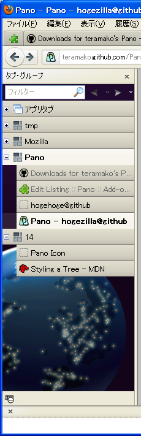

Styling Pano
for advance settings

Can edit CSS and change looks with CSS editor.
You need to learn the how to styling a tree maybe.
And following contents maybe help you:
like vertical tab bar and put background image

/* * Pano Tree Style * * Common Style Guide * see https://developer.mozilla.org/en/XUL_Tutorial/Styling_a_Tree * * Additional properties: * * currentTab : the cell and row of the current active tab * currentGroup: the cell and row of the current active group * item : the cell and row of tabs * group : the cell and row of groups * AppTabs : the cell and row of the pinned tab's group * apptab : the cell and row of pinned tabs * pending : the cell and row of tab which is not loaded the contents * unread : the cell and row of tab which is not selected yet * loading : the cell and row of tab which is loading(busy) * titlechanged: the cell and row of tab which is changed title * * Use following "@-moz-document" (see https://developer.mozilla.org/en/CSS/@-moz-document ) * if you want to apply styles to only either the sidebar or the panel, * * Sidebar: * @-moz-document url(chrome://pano/content/sidebar.xul) { ... } * Panel: * @-moz-document url(chrome://browser/content/browser.xul) { ... } * */ @charset "utf-8"; @namespace url("http://www.mozilla.org/keymaster/gatekeeper/there.is.only.xul"); .pano-tree treechildren::-moz-tree-cell-text(currentTab), .pano-tree treechildren::-moz-tree-cell-text(currentGroup) { font-weight: bold; } .pano-tree treechildren::-moz-tree-cell-text(unread) { color: magenta !important; } .pano-tree treechildren::-moz-tree-cell-text(pending) { color: GrayText !important; } .pano-tree treechildren::-moz-tree-cell-text(hover) { text-decoration: underline; } .pano-tree treechildren::-moz-tree-cell-text(titlechanged) { font-style: italic; } @-moz-document url(chrome://pano/content/sidebar.xul) { #panoToolBox > toolbar { background-color: rgb(32,10,48) !important; } .pano-tree { border: 0 !important; border-top: thin solid ThreeDShadow !important; margin: 0 !important; -moz-appearance: none !important; /* set background color and image */ background-color: rgb(48,10,64) !important; background-image: url("file:///G:/image/Mozilla_Nightly_icon_2011_sliced.png"), -moz-linear-gradient(top, transparent, rgba(0,0,0,.6) 50%); background-position: left bottom; background-repeat: no-repeat; background-size: contain; } .pano-tree treechildren::-moz-tree-cell-text(currentTab) { color: black !important; } /* like tab item */ .pano-tree treechildren::-moz-tree-row { background-image: -moz-linear-gradient(center bottom , rgba(26, 26, 26, 0.4) 1px, transparent 1px), -moz-linear-gradient(transparent, rgba(114, 114, 114, 0.1) 1px, rgba(81, 81, 81, 0.2) 80%, rgba(0, 0, 0, 0.2)), -moz-linear-gradient(-moz-dialog, -moz-dialog); background-clip: border-box, border-box, border-box; background-repeat: no-repeat; background-color: transparent; height: 26px !important; } .pano-tree treechildren::-moz-tree-row(leaf, currentTab), .pano-tree treechildren::-moz-tree-row(currentGroup) { background-image: -moz-linear-gradient(rgba(255,255,255,.7), rgba(255,255,255,.5) 50%), -moz-linear-gradient(-moz-dialog, -moz-dialog); } .pano-tree treechildren::-moz-tree-row(leaf) { background-position: 23px center; } .pano-tree treechildren::-moz-tree-row(group) { background-position: left center; } .pano-tree treechildren::-moz-tree-cell-text { font-size: 10pt; } .pano-tree treechildren::-moz-tree-indentation { width: 10px !important; } .pano-tree treechildren::-moz-tree-cell-text(pending) { color: #666 !important; } .pano-tree treechildren::-moz-tree-row(selected) { background-color: rgba(255,255,255,.1) !important; } }